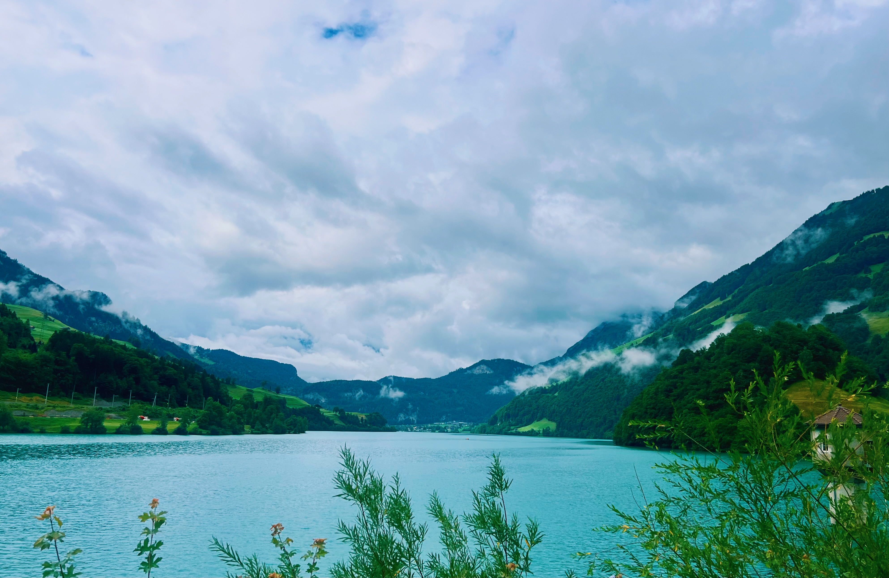
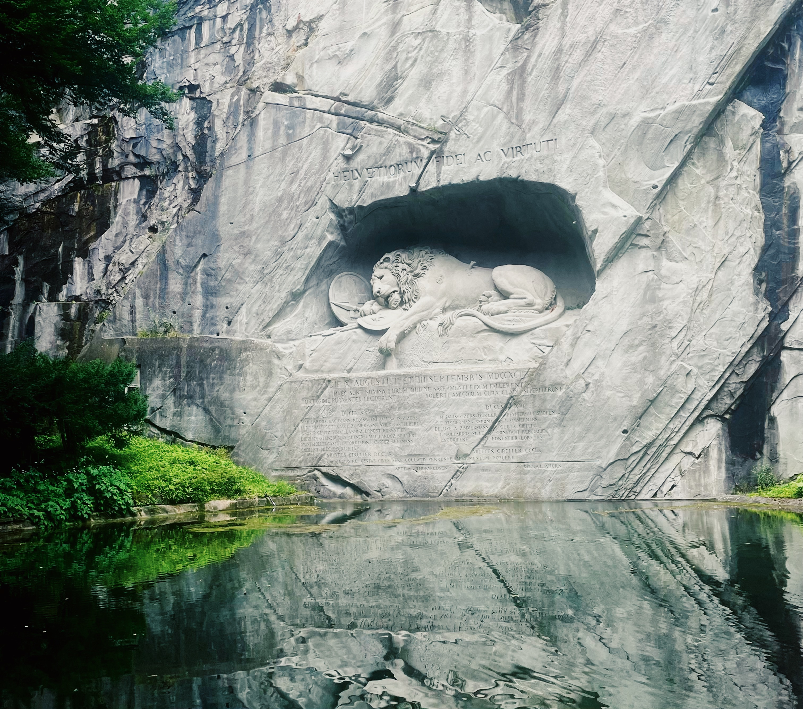

Bürglen Travel Guide
Bürglen is a small village in the canton of Uri, known primarily as the legendary birthplace of William Tell—Switzerland's national hero who may or may not have actually existed. It's quiet, traditional, and very much off the tourist trail. Unless you're a Swiss history enthusiast or passing through on your way between Lucerne and the mountain passes, there's not much reason to make a special trip here. But if you want to see authentic Swiss village life without the crowds, this is it.
The village sits in a valley surrounded by mountains, about 15 minutes from Altdorf (the larger town where the famous William Tell statue stands). It's picturesque in an understated way—traditional Swiss houses, a pretty church, agricultural land, and mountain views. There are no Instagram hotspots, no luxury hotels, no tour buses. It's Switzerland as it actually is, not as the tourism board sells it.
The William Tell Connection
William Tell is Switzerland's legendary folk hero—the crossbow-wielding rebel who shot an apple off his son's head and sparked the rebellion against Austrian rule in the 14th century. The problem? He probably didn't exist. Most historians consider him a myth, a symbol of Swiss independence rather than a real person. But Switzerland loves the legend anyway, and Bürglen claims him as a native son.
Tell Museum: The village's main attraction is the small museum dedicated to William Tell, housed in a medieval tower. It covers the legend, the historical context, and Tell's role in Swiss national identity. If you're interested in Swiss culture and folklore, it's worth an hour. If you're not, it's skippable. Entry is around CHF 7.
The museum is small and very local—don't expect English translations for everything. But the building itself is charming, and the exhibit provides context for why Tell matters so much to Swiss identity, even if he's likely fictional.


What Else to Do (Not Much)
Walk around the village: Bürglen is tiny—you can see the whole thing in 20 minutes. The church (St. Martin's) is pretty, the village center has traditional architecture, and there are nice mountain views. It's peaceful and authentic, but there's no specific "attraction" beyond the general atmosphere.
Drive or cycle to nearby villages: The Uri region has several small traditional villages connected by scenic roads. If you have a car or bike, exploring the valley is pleasant—rolling hills, farms, mountain backdrops. It's not dramatic like the Bernese Oberland, but it's genuinely Swiss rural life.
Altdorf: The larger town 15 minutes away has the famous William Tell statue and monument in the main square. If you're in Bürglen, you might as well see this too. Altdorf also has more restaurants and shops, making it a better base if you need services.
Who Should Visit
Bürglen is for a very specific type of traveler. You should visit if:
- You're interested in Swiss history and folklore
- You want to see traditional village life without tourist crowds
- You're driving between Lucerne and the Gotthard Pass or Andermatt
- You specifically want to visit the Tell Museum
- You prefer quiet, authentic experiences over iconic sights
Skip it if you're on a tight schedule, want dramatic scenery, or need tourist infrastructure. This isn't Grindelwald or Lauterbrunnen—it's a sleepy village with limited accommodation and dining options.
Getting There
Bürglen is about 45 minutes from Lucerne by car, or accessible by train via Altdorf. The train from Lucerne to Altdorf takes about 50 minutes, then it's a short bus ride or 15-minute walk to Bürglen. Most visitors arrive by car as they're passing through the region.
If you're driving the Gotthard Pass route (one of Switzerland's most scenic mountain roads), Bürglen makes a reasonable stopover. Otherwise, it's out of the way from major tourist routes.
Where to Stay and Eat
Accommodation in Bürglen is very limited—a few guesthouses and B&Bs aimed at locals, not international tourists. English may be limited. If you're staying in the area, Altdorf offers more options and better facilities.
For eating, there are one or two local restaurants serving traditional Swiss food. Don't expect menus in English or vegetarian options beyond cheese dishes. This is a rural Swiss village where fondue, rösti, and sausages dominate. Meals will cost CHF 20-35, cheaper than tourist areas but still Swiss prices.
Practical Tips
Language: German (Swiss German dialect specifically) is spoken here. English is less common than in tourist areas like Zurich or Interlaken. Basic German phrases help.
Don't expect tourist infrastructure: This isn't a tourist village. There are no souvenir shops, no luxury hotels, no tour operators. Bring cash—some places may not accept cards. Open hours can be unpredictable.
Best as a stopover: Bürglen works well as a 1-2 hour stop on a larger itinerary. Visit the Tell Museum, walk around, grab lunch in Altdorf, and continue to your next destination. Making it a dedicated day trip from Lucerne or elsewhere feels like overkill unless you're a serious William Tell enthusiast.
Visit nearby Altdorf too: The two towns are closely linked. Altdorf has the Tell monument, a historic town center, and better facilities. Combine both in a half-day visit for the full William Tell experience.
Timing: The Tell Museum has limited opening hours—check ahead before visiting. The village itself is accessible year-round, but there's even less going on outside summer months (June-September).
The Verdict
Bürglen is Switzerland's quiet side—a working village where people actually live, farm, and go about their lives without catering to tourists. It's refreshing in that sense, but also means there's very little to "do" in the conventional tourism sense. The William Tell Museum is the only real attraction, and even that's fairly niche.
Visit if you're passing through, curious about Swiss folklore, or want to escape tourist Switzerland for an hour. Skip it if you're short on time or prefer dramatic alpine scenery and tourist amenities. This is authentic Switzerland, which turns out to be quiet, rural, and not particularly exciting—but sometimes that's exactly what you need.